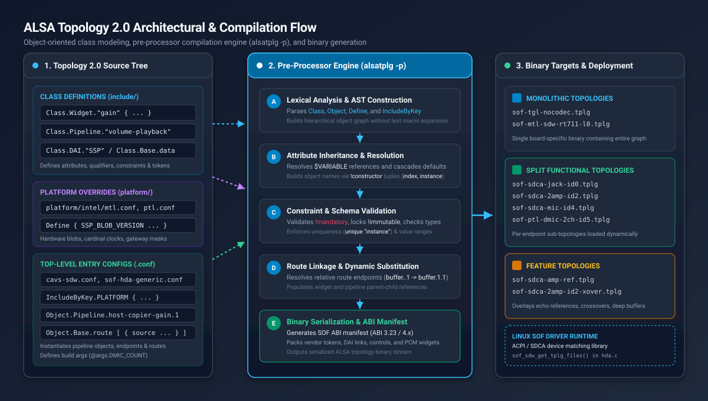
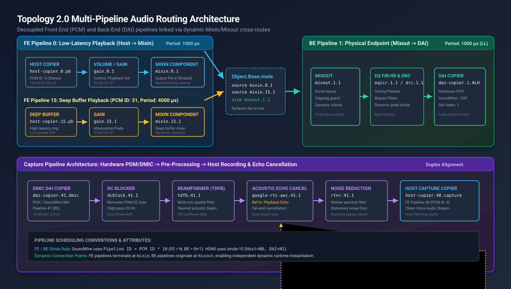
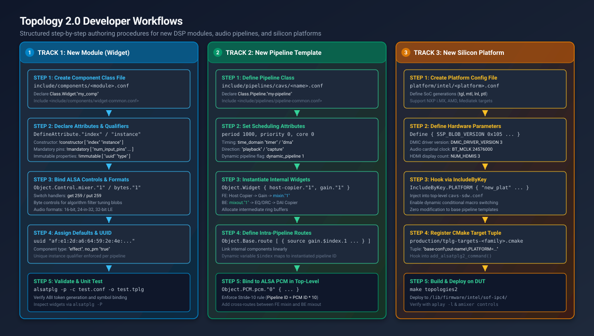
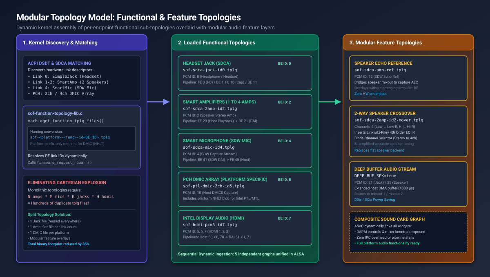

ALSA Topology 2.0 Architecture & Developer Guide#
Sound Open Firmware (SOF) utilizes ALSA Topology 2.0 (Topology v2) as its foundational configuration and audio graph description language. Built directly into upstream ALSA utilities (alsatplg v1.2.7+), Topology 2.0 provides an object-oriented pre-processing layer on top of the standard ALSA configuration syntax.
By replacing legacy external macro expansion engines (such as m4) with native class definitions, hierarchical inheritance, type validation, and dynamic attribute substitution, Topology 2.0 enables scalable, modular, and verified audio graph design across complex embedded Digital Signal Processors (DSPs).
{kind=link}

Figure 310 ALSA Topology 2.0 Architectural & Compilation Flow. Shows the object-oriented source structure, the 5-stage alsatplg -p pre-processor compilation engine, and binary target deployment across monolithic, functional, and feature topologies.#
Architectural Motivation & Key Advantages#
Traditional ALSA Topology v1 configurations relied heavily on the external macro processor m4. While flexible, the m4 approach suffered from significant maintenance and reliability challenges:
Lack of Type Safety & Validation: Typographical errors in token names, invalid integer ranges, or mismatched UUIDs were not caught until firmware boot or audio playback failure on target hardware.
Obtuse Build Failures: Pre-processor errors reported line numbers against intermediate expanded macro dumps rather than the original source files, complicating debugging.
Configuration Duplication: Supporting variations of the same audio pipeline (e.g., changing bit depths or buffer sizes) required duplicating extensive blocks of boilerplate text.
Cartesian Explosion across Board SKUs: Monolithic topology files required building hundreds of individual
.tplgbinaries for every hardware permutation (e.g., combinations of speaker amplifiers, microphones, headphone jacks, and display outputs).
Topology 2.0 resolves these issues through a structured, class-based object model:
Object-Oriented Syntax: Developers define reusable templates using
Class.Widget,Class.Pipeline,Class.DAI, andClass.Control, instantiating them cleanly asObject.WidgetorObject.Pipeline.Native Compiler Integration: The
alsatplg -pcompiler processes classes, attribute inheritance, and qualifiers directly within its internal Abstract Syntax Tree (AST), reporting precise line numbers and file contexts on syntax or constraint errors.Dynamic Parameter Cascades: Top-level arguments passed via
-D KEY=VALor@argsdynamically cascade down nested object hierarchies via$VARIABLEsubstitution.Split & Feature Topology Architecture: Supports modular sound cards where the Linux kernel dynamically loads independent Functional Topologies (e.g. per-endpoint SDCA graphs) overlaid with Feature Topologies (e.g. echo reference loops, 2-way speaker crossovers, and noise suppressors).
Core Language Ingredients & Syntax Reference#
A Topology 2.0 configuration tree consists of five foundational language primitives:
Classes (
Class.<Group>.<Name>): Reusable templates defining attributes, default values, qualifiers, and internal child objects.Objects (
Object.<Group>.<Name>.<Instance>): Concrete instantiations of classes with customized attributes.Arguments & Defines (
@args,Define): Dynamic variables parameterized at build time or within configuration blocks.Conditional Includes (
IncludeByKey.<Variable>): Regular expression matching for platform or feature file inclusion.Route Bindings (
Object.Base.route): Declarative directed audio stream links connecting component source pins to sink pins.
Keyword / Construct |
Scope |
Description |
|---|---|---|
|
Template Declaration |
Defines an object template within a compiler group ( |
|
Object Instantiation |
Instantiates a concrete topology object, overriding default class attributes and registering it into the topology graph. |
|
Class Ingredient |
Declares an attribute name and its data type ( |
|
Class Ingredient |
Enforces object construction rules, mandatory fields, immutability, and uniqueness qualifiers. |
|
Variable Scoping |
Assigns default values to local variables accessible via |
|
Pre-processor |
Evaluates a variable against regex patterns to conditionally include external configuration files. |
|
Routing Graph |
Declares directed connections from component source pins ( |
Class Definitions#
Classes establish the schema and behavior of topology objects. A class definition begins with the Class keyword followed by two dot-separated tokens: the class group and the class name.
Supported Class Groups#
The alsatplg compiler natively recognizes six fundamental class groups:
``Class.Base``: Low-level foundational constructs (e.g., data blobs, vendor tokens, audio format structures, route objects).
``Class.Widget``: DSP audio processing modules and hardware endpoints (e.g., PGA/Gain, Mixin, Mixout, EQ, DRC, Copier, Buffer).
``Class.Pipeline``: Reusable audio processing pipelines encapsulating scheduling parameters, internal widgets, and intra-pipeline routes.
``Class.DAI``: Physical Digital Audio Interfaces (e.g., Intel SSP, SoundWire ALH, DMIC, NXP SAI, ESAI).
``Class.Control``: ALSA userspace controls (e.g., mixer volume sliders, enum switches, binary configuration bytes).
``Class.PCM``: ALSA PCM stream endpoints exposed to host applications (e.g., playback, capture, deep buffer).
Class Ingredients & Attributes#
A robust class definition includes attribute declarations, attribute qualifiers, default properties, and optional child object composition:
Class.Base."data" {
# 1. Attribute declarations with explicit data types
DefineAttribute."name" {
type "string"
}
DefineAttribute."bytes" {
type "compound"
}
# 2. Attribute qualifiers
attributes {
# Defines which attributes construct the object's instance identifier
!constructor [
"name"
]
# Enforces mandatory provision at instantiation time
!mandatory [
"bytes"
]
# Enforces uniqueness within the enclosing configuration node
unique "name"
}
}
Attribute Qualifiers Matrix#
Attribute qualifiers defined within the attributes {} node enforce compile-time validation:
Qualifier |
Target |
Architectural Function |
|---|---|---|
|
Attribute Array |
Specifies the ordered tuple of attributes used to construct the object’s name (e.g., |
|
Attribute Array |
Declares attributes that must be explicitly provided when instantiating the object; compilation fails if omitted. |
|
Attribute Array |
Locks attributes to their class-defined default values; instantiators are prohibited from overriding them (e.g., |
|
Attribute Array |
Marks attributes scheduled for deprecation; compiler issues warnings if instantiated. |
|
Attribute Name |
Enforces that no two objects of this class within the same configuration node share the same attribute value. |
Constraints & Token References#
Attributes can be constrained to specific ranges or enumerations and bound directly to SOF ABI vendor tokens:
DefineAttribute."curve_type" {
type "string"
# Enforce valid enumeration options
constraints {
!valid_values [
"windows_fade"
"linear"
"logarithmic"
]
}
# Map directly to SOF vendor token
token_ref "sof_tkn_gain_curve_type"
}
DefineAttribute."buffer_size" {
type "integer"
# Enforce numeric boundary constraints
constraints {
min 64
max 65536
}
token_ref "sof_tkn_buf_size"
}
Objects & Instantiation#
Objects represent concrete instances of classes. When an object is instantiated, alsatplg resolves its constructor tuple, assigns default attributes from the parent class, applies local overrides, and registers the object into the topology graph.
Instantiating an Object#
To instantiate an object, declare Object.<Group>.<Class>.<Instance>:
# Instantiate a PGA / Gain widget in pipeline 1, instance 1
Object.Widget.gain."1" {
index 1
curve_type "windows_fade"
curve_duration 100000
# Instantiate embedded mixer control
Object.Control.mixer."1" {
name "Main Playback Volume"
max 32
}
}
Nested Objects & Attribute Inheritance#
Topology 2.0 allows nesting child objects within parent objects or class definitions. Child objects automatically inherit attributes from their parent objects unless explicitly overridden:
Class.Pipeline."volume-playback" {
# Pipeline attributes
DefineAttribute."index" {
type "integer"
}
DefineAttribute."priority" {
type "integer"
default 0
}
# Internal child widgets inherit $index automatically
Object.Widget {
host-copier."1" {
index $index
stream_name "Playback Stream"
}
gain."1" {
index $index
}
mixin."1" {
index $index
}
}
}
Dynamic Variables & Conditional Includes#
Topology 2.0 provides macro-free parameterization through Define blocks, build arguments (@args), and regular-expression-driven IncludeByKey directives.
The Define Block & Variable Cascades#
The Define block sets default variable values that can be referenced using $VARIABLE notation throughout the file:
Define {
PLATFORM "ptl"
NUM_HDMIS 3
DEEP_BUFFER_PCM_ID 31
HEADSET_PCM_ID 0
SPK_AMPS_COUNT 2
}
# Variable evaluation in object instantiation
Object.PCM.pcm."0" {
name "Headset Playback"
id $HEADSET_PCM_ID
direction "playback"
}
Build Arguments (@args)#
Top-level arguments allow passing parameters from the command line (via alsatplg -D KEY=VALUE) or from CMake targets:
@args.DMIC_COUNT {
type integer
default 2
}
@args.FORMAT {
type string
default "s32le"
}
Conditional Includes (IncludeByKey)#
The IncludeByKey directive inspects a variable’s value against a table of regular expressions, including the matching file:
# Platform-specific hardware definitions
IncludeByKey.PLATFORM {
"tgl" "platform/intel/tgl.conf"
"mtl" "platform/intel/mtl.conf"
"lnl" "platform/intel/lnl.conf"
"ptl" "platform/intel/ptl.conf"
}
# Feature gating based on channel count
IncludeByKey.DMIC_COUNT {
"[1-2]" "platform/intel/dmic-2ch.conf"
"[3-4]" "platform/intel/dmic-4ch.conf"
}
Pipeline Architecture & Multi-Pipeline Audio Routing#
SOF decouples audio processing graphs into Front-End (FE) Host Pipelines and Back-End (BE) DAI Pipelines, interconnected dynamically using mixin and mixout components.
{kind=link}

Figure 311 Topology 2.0 Multi-Pipeline Audio Routing Architecture. Demonstrates decoupled Front-End (FE) host pipelines mixing into Back-End (BE) DAI pipelines, complete with acoustic echo cancellation (AEC) feedback loops and full-duplex DMIC capture.#
Front-End vs Back-End Decoupling#
Front-End (FE) Pipelines: Bound directly to ALSA PCM stream devices (
/dev/snd/pcmC0D0p). FE pipelines contain a Host Copier, optional sample rate conversion (SRC) or volume adjustment, and terminate at a ``mixin`` component. They run in the host timer/DMA domain and are instantiated or stopped dynamically when userspace opens or closes an audio stream.Back-End (BE) Pipelines: Bound to physical hardware digital audio interfaces (Intel SSP, SoundWire ALH, DMIC, NXP SAI). BE pipelines begin at a ``mixout`` component, route through post-processing stages (Parametric EQ FIR/IIR, Dynamic Range Compression DRC, Smart Amplifier protection), and terminate at a DAI Copier. BE pipelines remain active to maintain hardware clock synchronization and power state stability.
Inter-Pipeline Routing with Mixin and Mixout#
The mixin and mixout components operate as zero-copy shared memory endpoints. Multiple FE pipelines can concurrently mix into a single BE mixout without sample rate mismatches or pipeline stalls:
# Cross-pipeline routes connecting FE mixin outputs to BE mixout inputs
Object.Base.route [
{
# Normal latency host playback stream (FE 0 -> BE 1)
source "mixin.0.1"
sink "mixout.1.1"
}
{
# Deep buffer power-saving stream (FE 15 -> BE 1)
source "mixin.15.1"
sink "mixout.1.1"
}
]
Dynamic Index Resolution#
In class definitions, internal routes reference relative component instances where the pipeline ID is unknown until instantiation:
# Inside Class.Pipeline."volume-playback"
Object.Base.route [
{
source "gain.$index.1"
sink "mixin.$index.1"
}
]
When instantiated as Object.Pipeline.volume-playback."5", alsatplg automatically expands $index to produce gain.5.1 and mixin.5.1.
Conventions & ID Allocation Rules#
To prevent hardware resource collisions and ensure predictable ALSA userspace enumeration, SOF enforces strict numbering conventions across PCM stream IDs and Pipeline IDs.
PCM ID Allocation Matrix#
Each ALSA PCM device requires a unique integer ID within the sound card:
Endpoint Description |
SoundWire ID |
HDA ID |
Override Variable / Purpose |
|---|---|---|---|
Primary Headphone / Jack |
0 |
0 |
Primary stereo playback/capture stream |
Speaker Amplifier |
2 |
— |
High-power external stereo/multichannel smart amplifier |
SoundWire Smart Mic |
4 |
— |
Digital SoundWire capture stream |
Display Audio (HDMI 1) |
5 |
3 |
|
Display Audio (HDMI 2) |
6 |
4 |
|
Display Audio (HDMI 3) |
7 |
5 |
|
PCH DMIC0 Capture |
10 |
6 |
|
PCH DMIC1 / Jack Echo Ref |
11 |
— |
|
Speaker Echo Reference |
12 |
— |
|
Bluetooth Audio (BT/Offload) |
20 |
— |
|
Deep Buffer (Jack Playback) |
31 |
31 |
|
Deep Buffer (Speaker) |
35 |
— |
|
Compress Offload (Jack) |
50 |
50 |
|
Compress Offload (Speaker) |
52 |
— |
|
Pipeline ID Conventions & Stride-10 Rule#
Pipeline IDs (the index attribute on pipeline objects) must be unique across the topology:
SoundWire Stride-10 Rule: In SoundWire topologies, pipeline indexes follow the deterministic relationship:
\[\text{Pipeline Index} = \text{PCM ID} \times 10\]Front-End (FE) Pipeline: Assigned index \(N\) (e.g. PCM 0 → FE Pipeline 0).
Back-End (BE) Pipeline: Assigned index \(N + 1\) (e.g. BE Pipeline 1).
Example: Speaker Stream (PCM ID 2) → FE Host Pipeline 20, BE DAI Pipeline 21.
Example: SDW DMIC (PCM ID 4) → BE DAI Pipeline 41, FE Host Pipeline 40.
HDMI Stride-10 Rule: HDMI display audio pipelines allocate Host pipelines at \(N0\) and DAI pipelines at \(N1\): * HDMI 1: Host Pipeline 50, DAI Pipeline 51. * HDMI 2: Host Pipeline 60, DAI Pipeline 61. * HDMI 3: Host Pipeline 70, DAI Pipeline 71. * HDMI 4: Host Pipeline 80, DAI Pipeline 81.
Step-by-Step Developer Workflows#
Developing new audio capabilities in SOF requires modifying or adding topology definitions. Below are comprehensive, step-by-step guides for the three most common development tasks:
Creating a New Module (Component/Widget)
Creating a New Pipeline Template
Adding a New Silicon Platform
{kind=link}

Figure 312 Structured Topology 2.0 Developer Workflows. Details the 5-step engineering procedures for authoring a new DSP module, a new pipeline template, and a new silicon platform.#
Tutorial 1: Creating a New Module (Widget/Component)#
When introducing a new DSP processing algorithm (e.g. a custom spatializer, filter, or neural network spotter), developers must define a corresponding Topology 2.0 widget class.
Step 1: Create the Component Class File#
Create a new file in tools/topology/topology2/include/components/<module_name>.conf (e.g. include/components/my_filter.conf):
#
# My Custom Audio Filter Component Definition
#
# Usage:
# Object.Widget.my_filter."1" {
# index 1
# }
#
<include/controls/mixer.conf>
<include/controls/bytes.conf>
Class.Widget."my_filter" {
# Pipeline ID to which this widget belongs
DefineAttribute."index" {
type "integer"
}
# Unique instance identifier within the pipeline
DefineAttribute."instance" {
type "integer"
}
# Include shared widget attributes (num_input_pins, formats, etc.)
<include/components/widget-common.conf>
attributes {
# Construct name as: my_filter.<index>.<instance>
!constructor [
"index"
"instance"
]
!mandatory [
"num_input_pins"
"num_output_pins"
"num_input_audio_formats"
"num_output_audio_formats"
]
!immutable [
"uuid"
"type"
]
unique "instance"
}
# Embedded ALSA Controls
Object.Control {
# Binary tuning coefficients control
bytes."1" {
name "MyFilter Coefficients"
}
# Runtime bypass/enable switch
mixer."1" {
name "MyFilter Switch"
Object.Base.channel.1 {
name "fc"
shift 0
}
Object.Base.ops.1 {
name "ctl"
info "volsw"
get 259 # SOF switch get handler
put 259 # SOF switch put handler
}
max 1
}
}
# Default Widget Properties
uuid "a4:b2:3c:5d:7e:8f:90:12:34:56:78:9a:bc:de:f0:12"
type "effect"
no_pm "true"
num_input_pins 1
num_output_pins 1
}
Step 2: Declare Audio Format Support#
If the component requires specific sample rates or bit depths, define supported input and output audio formats in the class definition or during object instantiation:
Object.Base.input_audio_format [
{
in_rate 48000
in_bit_depth 32
in_valid_bit_depth 32
in_channels 2
}
]
Object.Base.output_audio_format [
{
out_rate 48000
out_bit_depth 32
out_valid_bit_depth 32
out_channels 2
}
]
Step 3: Test Widget Compilation#
Validate that the new widget class compiles cleanly into an ALSA topology binary:
alsatplg -p -c test-my-filter.conf -o test-my-filter.tplg
Tutorial 2: Creating a New Pipeline Template#
Pipelines package a set of interconnected widgets into an autonomous, schedulable execution unit.
Step 1: Create the Pipeline Class File#
Create a new file in tools/topology/topology2/include/pipelines/cavs/<pipeline_name>.conf (e.g. include/pipelines/cavs/my-processing-playback.conf):
#
# Processing Playback Pipeline: Host Copier -> Gain -> MyFilter -> Mixin
#
<include/common/input_audio_format.conf>
<include/common/output_audio_format.conf>
<include/components/host-copier.conf>
<include/components/gain.conf>
<include/components/my_filter.conf>
<include/components/mixin.conf>
<include/components/pipeline.conf>
Class.Pipeline."my-processing-playback" {
<include/pipelines/pipeline-common.conf>
attributes {
!constructor [
"index"
]
!immutable [
"direction"
]
unique "instance"
}
# Internal Pipeline Widgets
Object.Widget {
host-copier."1" {
type "aif_in"
num_input_audio_formats 3
num_output_audio_formats 1
num_output_pins 1
}
gain."1" {
num_input_audio_formats 1
num_output_audio_formats 1
}
my_filter."1" {
num_input_audio_formats 1
num_output_audio_formats 1
}
mixin."1" {}
pipeline."1" {
priority 0
lp_mode 0
}
}
# Intra-Pipeline Linear Routes
Object.Base.route [
{
source "host-copier.$index.1"
sink "gain.$index.1"
}
{
source "gain.$index.1"
sink "my_filter.$index.1"
}
{
source "my_filter.$index.1"
sink "mixin.$index.1"
}
]
direction "playback"
dynamic_pipeline 1
time_domain "timer"
period 1000
}
Step 2: Instantiate in a Top-Level Topology#
Include your new pipeline in the board configuration file and bind it to an ALSA PCM device:
Object.Pipeline.my-processing-playback."0" {
index 0
Object.Widget.host-copier.1 {
stream_name "Main Playback"
pcm_id 0
}
}
# Cross-route from FE mixin to BE mixout
Object.Base.route [
{
source "mixin.0.1"
sink "mixout.1.1"
}
]
Tutorial 3: Adding a New Silicon Platform#
Adding support for a new hardware platform (e.g. a new Intel SoC stepping or a new vendor DSP) requires configuring platform hardware tokens, DAI parameters, and CMake build targets.
Step 1: Create the Platform Configuration File#
Create a new configuration file in tools/topology/topology2/platform/<vendor>/<platform>.conf (e.g. platform/intel/new_soc.conf):
# Platform-specific definitions for new_soc
Define {
PLATFORM "new_soc"
SSP_BLOB_VERSION 0x106
DMIC_DRIVER_VERSION 4
NUM_HDMIS 4
BT_MCLK 24576000
HDA_HOST_OUTPUT_CLASS "aif_in"
HDA_HOST_INPUT_CLASS "aif_out"
}
Step 2: Hook into Top-Level Configurations#
Add the new platform identifier to the IncludeByKey.PLATFORM dispatch table in top-level topology entry points (e.g. cavs-sdw.conf, sof-hda-generic.conf):
IncludeByKey.PLATFORM {
"tgl" "platform/intel/tgl.conf"
"mtl" "platform/intel/mtl.conf"
"lnl" "platform/intel/lnl.conf"
"ptl" "platform/intel/ptl.conf"
"new_soc" "platform/intel/new_soc.conf"
}
Step 3: Register CMake Production Targets#
Add target generation entries to production/tplg-targets-<family>.cmake using the semicolon-delimited tuple format:
"input-conf;output-name;variables"
Example entry in production/tplg-targets-ace3.cmake:
list(APPEND TPLGS
"cavs-sdw\;sof-newsoc-sdw-cs42l43-l0-cs35l56-l12\;PLATFORM=new_soc,NUM_SDW_AMP_LINKS=2,SDW_JACK=true"
"sof-hda-generic\;sof-newsoc-hda-generic\;PLATFORM=new_soc,NUM_HDMIS=4,DMIC_COUNT=2"
)
Step 4: Build and Verify on DUT#
Build the new topology target using CMake:
# Build all Topology 2.0 targets
cmake --build . --target topologies2
# Or build the specific target
cmake --build . --target sof-newsoc-sdw-cs42l43-l0-cs35l56-l12
Modular Topology Model: Functional vs Feature Topologies#
Modern audio architectures—particularly those adhering to MIPI SoundWire Device Class Audio (SDCA)—demand high modularity. To avoid an unsustainable explosion of monolithic binary topology files, SOF introduces Split Topologies, dividing the audio graph into Functional Topologies and Feature Topologies.
{kind=link}

Figure 313 Modular Topology Model: Functional & Feature Topologies. Illustrates dynamic ACPI/SDCA endpoint discovery by the Linux SOF driver, sequential loading of per-endpoint functional sub-topologies, and modular layering of feature overlays into a single unified runtime ALSA graph.#
Functional Topologies (Split Topologies)#
A Functional Topology is an independent, self-contained topology binary that encapsulates exactly one physical audio function or hardware endpoint (e.g., a headphone jack, a stereo speaker amplifier array, a digital microphone, or display audio).
Naming Convention#
Split functional topology files follow a standardized naming structure:
sof-<platform>-<function>-id<BE_ID>.tplg
``<platform>``: Platform family identifier (e.g.,
tgl,mtl,ptl). Platform prefix is mandatory only for DMIC functions (due to platform-specific NHLT microphone array blobs) and omitted for generic SDCA endpoints.``<function>``: Specific audio endpoint capability: *
sdca-jack: SDCA headphone / headset combo jack. *sdca-<N>amp: SDCA smart speaker amplifiers, where<N>indicates the number of amplifier links (e.g.sdca-1amp,sdca-2amp,sdca-4amp). *sdca-mic: SDCA digital microphone stream. *dmic-<N>ch: PCH digital microphone array (e.g.dmic-2ch,dmic-4ch). *hdmi-pcm<ID>: Intel display audio starting from PCM ID<ID>(e.g.hdmi-pcm5).``id<BE_ID>``: The back-end DAI link ID allocated by the Linux machine driver.
Examples of Functional Topologies:
sof-sdca-jack-id0.tplg # Headset jack on BE link 0
sof-sdca-2amp-id2.tplg # Dual smart amplifiers on BE link 2
sof-sdca-mic-id4.tplg # SoundWire microphone on BE link 4
sof-ptl-dmic-2ch-id5.tplg # PTL 2-channel PCH DMIC on BE link 5
sof-hdmi-pcm5-id7.tplg # Display audio starting at PCM 5 on BE link 7
Dynamic Kernel Assembly (sof-function-topology-lib.c)#
Rather than loading a single hardcoded topology file specified by ACPI, the modern SOF machine driver (sof_sdw) queries the hardware at boot:
ACPI / SDCA Matching: The driver inspects the ACPI DSDT table and scans the SoundWire bus to enumerate active peripheral devices (codecs, amplifiers, microphones).
Topology List Assembly: In
sound/soc/intel/common/sof-function-topology-lib.c,sof_sdw_get_tplg_files()inspects each registered DAI link and generates the required functional topology filenames matching detected peripherals.Sequential Firmware Request: The kernel requests and parses each
.tplgfile sequentially usingfirmware_request_nowarn().Unified Graph Ingestion: The SOF topology core parses the components and routes from each file, dynamically binding them into a cohesive ALSA sound card graph.
Feature Topologies#
A Feature Topology is an orthogonal topology overlay that adds specialized DSP processing capabilities or feedback pipelines to an existing functional graph without altering physical hardware DAI routing.
Common Feature Topologies#
Speaker Echo Reference (``sof-sdca-amp-ref.tplg`` / ``sof-sdca-amp-ref-dai.tplg``): Extracts a reference tap from the speaker playback pipeline (
mixout.21) and routes it into the capture domain for Acoustic Echo Cancellation (AEC). Enables clean full-duplex speakerphone communication during loud media playback.Jack Echo Reference (``sof-sdca-jack-ref-dai.tplg``): Echo reference loopback for headphone/headset communication.
2-Way Speaker Crossover (``sof-sdca-2amp-id2-xover.tplg``): Splits stereo audio into 4 channels (Low-Left, Low-Right, High-Left, High-Right) using Linkwitz-Riley 4th order (LR4) IIR filters and a channel selector, targeting bi-amplified tweeter/woofer speaker systems.
Deep Buffer Audio Streams (``DEEP_BUF_SPK=true``): Instantiates high-latency (4000 µs) host DMA ring buffers, allowing the host CPU to remain asleep in deep ACPI S0ix / Modern Standby while audio continues playing seamlessly.
Build Configuration for Functional & Feature Topologies#
Split and feature topologies are configured in production/tplg-targets-sdca-generic.cmake:
# Split Functional Topologies
"cavs-sdw\;sof-sdca-jack-id0\;SDW_JACK_OUT_STREAM=Playback-SimpleJack,SDW_JACK_IN_STREAM=Capture-SimpleJack,NUM_HDMIS=0"
"cavs-sdw\;sof-sdca-2amp-id2\;NUM_SDW_AMP_LINKS=2,SDW_JACK=false,SDW_AMP_FEEDBACK=false,SDW_SPK_STREAM=Playback-SmartAmp,NUM_HDMIS=0,DEEP_BUF_SPK=true"
"cavs-sdw\;sof-sdca-mic-id4\;SDW_JACK=false,SDW_DMIC=1,NUM_HDMIS=0,SDW_DMIC_STREAM=Capture-SmartMic"
# Feature Topologies (Echo Reference & Crossover Overlays)
"cavs-sdw\;sof-sdca-amp-ref\;SDW_JACK=false,NUM_HDMIS=0,JACK_RATE=48000,SDW_AMP_FEEDBACK=false,SDW_SPK_ECHO_REF=true,SDW_SPK_ECHO_REF_PCM_ID=12"
"cavs-sdw\;sof-sdca-2amp-id2-xover\;NUM_SDW_AMP_LINKS=2,SDW_JACK=false,SDW_AMP_FEEDBACK=false,SDW_SPK_STREAM=Playback-SmartAmp,NUM_HDMIS=0,SDW_AMP_NUM_CHANNELS=4,SDW_AMP_XOVER=true"
Compiling, Inspecting & Debugging Topologies#
Compiling with alsatplg#
Topology 2.0 configuration files are compiled into binary .tplg files using alsatplg with the mandatory pre-processor flag (-p):
# Basic compilation
alsatplg -p -c cavs-sdw.conf -o sof-sdw-output.tplg
# Compilation with parameter overrides
alsatplg -D PLATFORM=ptl -D NUM_HDMIS=3 -D DMIC_COUNT=2 -p -c cavs-sdw.conf -o sof-ptl-sdw.tplg
Decompilation & Inspection (alsatplg -P)#
To inspect how classes, object inheritance, and dynamic variables expand during pre-processing, use the uppercase -P flag to emit expanded ALSA conf text:
# Convert Topology 2.0 object-oriented conf into flat ALSA conf v1
alsatplg -D PLATFORM=ptl -P cavs-sdw.conf -o expanded_debug.conf
The output file contains the fully resolved object graph, allowing developers to verify exact widget IDs, constructor values, and route connections.
Target DUT Verification Commands#
Once deployed to /lib/firmware/intel/sof-ipc4/ on the target DUT (e.g. Tiger Lake, Panther Lake, or Arrow Lake), verify topology loading and ALSA device registration:
# 1. Inspect kernel dmesg for topology loading logs
dmesg | grep -E "sof.*(tplg|topology|soundwire)"
# 2. List registered ALSA playback and capture PCM devices
aplay -l
arecord -l
# 3. Dump all mixer controls and kcontrols created by topology widgets
amixer -c 0 scontrols
amixer -c 0 contents
# 4. Inspect active DSP pipelines and memory usage via debugfs
cat /sys/kernel/debug/sof/memory_info
Troubleshooting & Diagnostic Matrix#
Error / Symptom |
Root Cause |
Diagnostic & Resolution |
|---|---|---|
|
An object omitted an attribute required by |
Inspect compiler error output for the attribute name; provide the missing attribute in the object instantiation block. |
|
Two objects of the same class within the same configuration node have identical constructor or instance values. |
Ensure each widget or pipeline object within a node has a distinct instance number (e.g. |
|
Route refers to a widget name that does not exist, or route was defined with an incorrect pipeline index. |
Run |
|
Split functional topology is missing from |
Verify that all split functional targets were compiled by checking |
|
Host buffer period size or ring geometry is insufficient for host sleep latency. |
Ensure deep buffer pipeline period is set to 4000 µs with at least 4 periods allocated in |